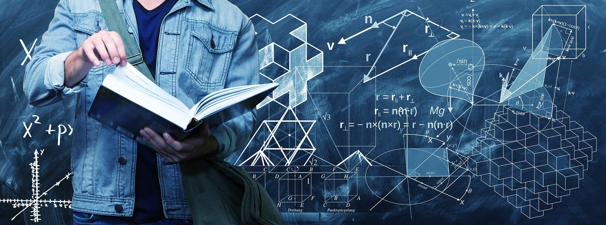

إن الفيزياء مادة معقدة حقاً و مصدر قلق للجميع ، ولاكن هل تمكنت سابقاً من التفكير بطرق تجعلها أبسط و أقل تعقيداً ؟
إليك الآن 5 طرق ستجعل مادة الفيزياء هي الأبسط
هل هذا ممكن ؟! 🤔
أجل .. و ستصبح من المتفوقين ايضاً
1- يجب أن تتحرى مصدر التعقيدات و تقوم بحلها
لنرى كيف تكون الطريقة الأعتيادية لدراسة مادة الفيزياء لمعظم الطلاب
في البداية يتم شرح الدرس من قِبل المعلمين و تدوين الملاحظات و القوانين الهامة و التدريب على حل المعادلات و المسائل مع المعلم ، ثم حل التدريبات بدون مساعدة حتى يصير الطالب قادراً على الحل بمفردة و تصيح اخطاءه .
لنقم بتحديد بعض النقاط التي قد تمثل مصدراً للمشاكل التي يواجهّا الطلاب .
اولاً : أسلوب الشرح
لا يوجد شخصان لهما نفس التفكير ؛ و بالتالي لا يوجد مدرسان لهما نفس أسلوب الشرح ، و يعتمد أسلوب شرح المعلم على مدى استيعاب الطلاب له و كيف يستقبلون المعلومات .
فإذا كانت هذه احدى مشاكلك فقم بتغير المدرس حتى تجد من يستطيع أن يبسط لك المعلومات و يرتبها في عقلك بأسلوبه الخاص .
ثانياً : طريقة التدوين
لا تقم بكتابة كل ما يقوله المعلم ؛ بل قم بكتابة أهم الملاحظات مثل المفاهيم و القوانين التي سوف تساعدك في حل المسائل المتعلقة بالدرس .
و محاوله فهم الأساسيات و المفاهيم الهامة التي يبنى عليها الدرس و كتابتها بطريقتك الخاصة حتى يسهل عليك تذكرها بدون الرجوع الى ملاحظاتك .
ثالثاً : حل المسائل مع المعلم
اثناء حل المسائل الفيزيائية مع المعلم يجب عليك التركيز بصورة أكبر لأن عقل الانسان ينتمى إلى أسلوب التعلم العملي و ليس النظري ، فمن الأفضل أن تقوم بحل المسألة مرة أخرى بعد أن ينتهى المدرس من حلها ؛ حتى توظف الجانب العملي و حتى إن فشلت فستستطيع أن ترى الخطأ وتتعلم منه حتى لا يتكرر .
و في دراسة تؤكد أن الأنسان يتعلم من التجارب الحياتية أكثر بكثير من المعلومات النظرية .
رابعاً : الحل الفردي
بالتأكيد إذا قمت بأتباع ما سبق فلن تواجه أيه مشكلة في حل الواجبات المنزلية و التدريبات الفردية بل و ستصبح قادراً على تحصيل درجات ممتازة .
ولاكن هل هذا كل شيء ؟
بالطبع لا ، انت الآن قادر على حل المسائل و الواجبات بدون مواجه تعقيدات ولكنك لم تحترف الفيزياء بعد !
2- تنمية مهاراتك في الرياضيات
الفيزياء تستند بشكل كبير على الرياضيات بكل فروعها ( جبر – هندسة – تفاضل و تكامل – خوارزميات ) ، لهذا يجب عليك التطوير الدائم في مجال الرياضيات و سوف اقدم لك بعض البرامج و المواقع و الألعاب التي سوفت تساعدك على زيادة تركيزك و خبرتك في المسائل الرياضية ، بالإضافة إلى بعض الكورسات التي ستؤهلك إلى احتراف الرياضيات ، و هذا سيرفع من مستوى ذكائك بشكل كبير .
البرامج :
1- Maths formulas free
2- Division With Ibbleobble
3- Photomath
4- Math Riddles
المواقع :
1 - IXL Maths
2- Shmoop
كورسات مجانية :
1- Mathematics (All of it )
2- MIT Mathematics
أنت لست مطالباً بمشاهدة كل هذا الآن بالطبع ولاكن من الأفضل ان تخصص له من وقتك في الاجازة الصيفية .
3-الفيزياء ليست صعبة
دائما ما نبتعد عن أشياء كثيرة لمجرد سماعنا أنها سيئة او غير مجدية او صعبة ؛ حتى بدون أن نقوم بتجربتها و نبتعد عنها لمجرد أنها معروفة بصعوبتها ، ولاكن هذا ليس صحيحاً ، فمن غير المنطقي أن تقوم بفهم المادة بدون محاولة مذاكرتها .
و ليس شرطاً أن تطقن فهمها و حلها من أول مرة ، كل ما عليك هو أن تبدأ بعقلك و تبسط الأمر على نفسك و تقوم بحل المسائل و التجربة مرة تلو الأخرى حتى يصبح الأمر يسيراً و ليس بالصعوبة التي كنت تتخيلها في بداية الأمر .
4- استمتع بوقتك اثناء المذاكرة
غالباً ما تكون الأهداف هي الطاقة الإضافية التي تساعد الانسان على الاستمرار في تقدمة ؛ و حتى تصبح الفيزياء أسهل و أبسط عليك أن تقسم الدرس الى أجزاء و تقوم بمذاكرة كل جزء على حدى و حل تدريباته و اعتباره هدف صغير يتلوه هدف صغير حتى تصل الى الهدف الكبير و هو فهم الدرس و مذاكرته و حل تدريباته .
ستجد انك قد حققت إنجازات كثيرة في يوم واحد و سيكون دافعاً لك بالاستمرار في باقي المواد .
إذا كنت تحب الرسم فقم بعمل خريطة لملاحظاتك أثناء المذاكرة بشكل جميل و ساعد بها نفسك و زملاءك .
قم بمشاهدة تجارب واقعية لما تدرسه ، لأن هذا سيساعدك على التذكر بشكل افضل بكثير .
اثناء حل التدريبات لا تتسرع و إذا واجهت أي صعوبة فهذا شيء طبيعي و ليس تقصيراً منك ، فكر بمنطقية .
5- لا تفكر كطالب ؛ بل كعالم
من الممتع و الشيق أن تصبح عالماً فيزيائياً ؛ اختر قدوة من العلماء المفضلين لديك و فكر مثلهم .
هذا سيساعدك على تخطى القلق من المادة و ينهى كل التعقيد الذى تفكر به حال دراستك لمادة الفيزياء .
بل و سيصبح دافعاً لك للاستمرار في الدراسة و البحث عن حل للمشكلات التي تواجهها في المسائل الفيزيائية ؛ فأي عالِم قد واجه مشاكل لا تعد ولا تحصى ، و قاموا بتجارب كثيرة حتى تمكنوا من الوصول الى أهدافهم .
الآن و بعد أن استرجعت طاقتك ، هل انت جاهز لتصبح من المتفوقين في مادة الفيزياء ؟
أتمنى أن أكون قد أضفت اليك شيئاً جديداً يساعدك على الوصول الى ما تطمح .
إذا اردت قراءة المزيد من المقالات ؛ يمكنك الزهاب الى قسم الموضوعات و الاستمتاع بالقراءة و مشاركة آراءك عبر جروب منتدى شباب الفضاء على الفيسبوك
© Copyright 2022 Space Youth Forum